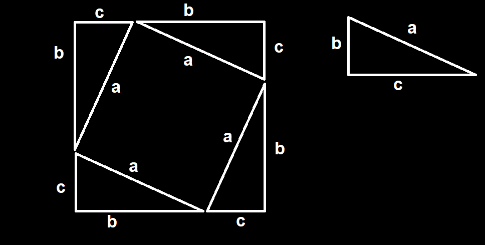

O que é o teorema de pitágoras?
antes de conhecer o teorema de pitágoras, precisamos conhecer os elementos dos quais ele trata.
Primeiro, saiba que um triângulo retângulo é um triângulo que um de seus ângulos mede 90 graus. E, nesse tipo de triângulo, chamamos de hipotenusa seu lado maior e de catetos seus 2 lados menores. (a hipotenusa é sempre o maior lado do triângulo)
O teorema de pitágoras diz que o quadrado da hipotenusa é igual a soma dos quadrados dos 2 catetos. Ou seja, sendo A a hipotenusa e B e C os catetos, A² = B² + C²
Mas por que isso acontece?
para explicar o porque essa propriedade existe, vamos analisar um quadrado que seu lado mede B+C, construído com 4 triângulos retângulos girados 90 graus conectados pelos vértices adjacentes a hipotenusa conforme a figura:

o pensamento que dá origem ao teorema de pitágoras é perceber que podemos descobrir a área do quadrado menor formado no centro do quadrado maior subtraindo a área do maior pela área dos 4 triângulos retângulos.
se você já estudou a propriedade distributiva, sabe que a área do quadrado maior é dada por (b+c)² = (b+c)(b+c) = (b²+bc) + (bc+c²) = b² + 2bc + c² que é o produto notável do quadrado da soma.
Sabendo que a área de um triângulo retângulo é dada por B*C/2 e que temos 4 triângulos retângulos, temos que a área dos triângulos retângulos é B*C/2*4 = 2BC
subtraindo a área do quadrado maior pela área dos triângulos retângulos para encontrar a área do quadrado menor: a² = b² + 2bc + c² - 2bc = b²+c² logo a² = b²+c², exatamente a igualdade dada pelo teorema de pitágoras.